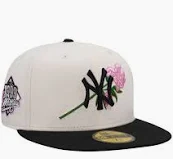
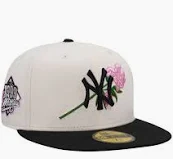

En keps består vanligtvis av sex paneler som sys ihop för att forma kronan. Framtill sitter en böjd eller platt skärm som skyddar mot solen. På insidan finns ett svettband som absorberar fukt och gör kepsen bekvämare. Längst upp sitter ofta en liten knapp, och bak finns en justerbar rem eller spänne för att passa olika huvudstorlekar.